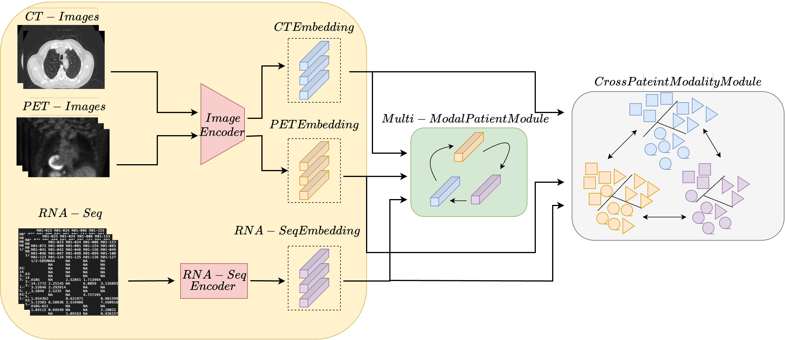
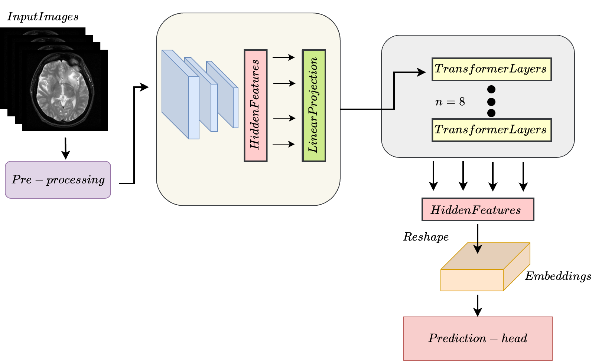
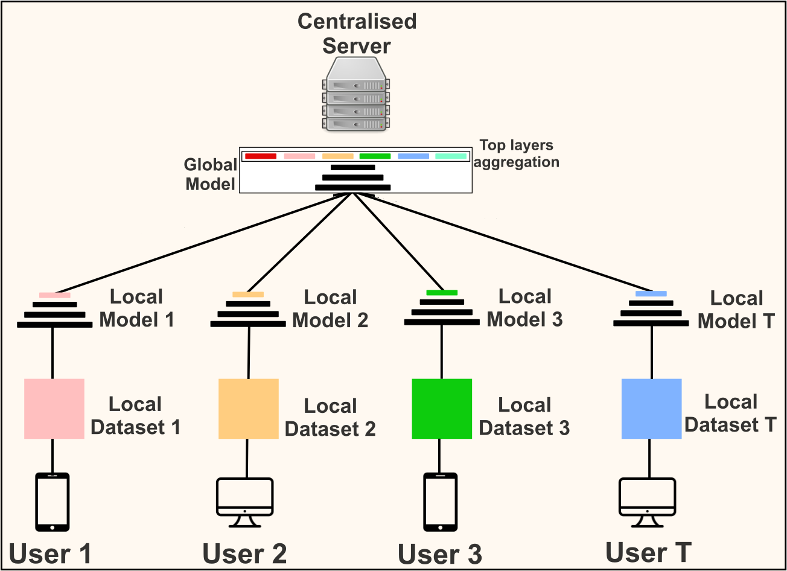
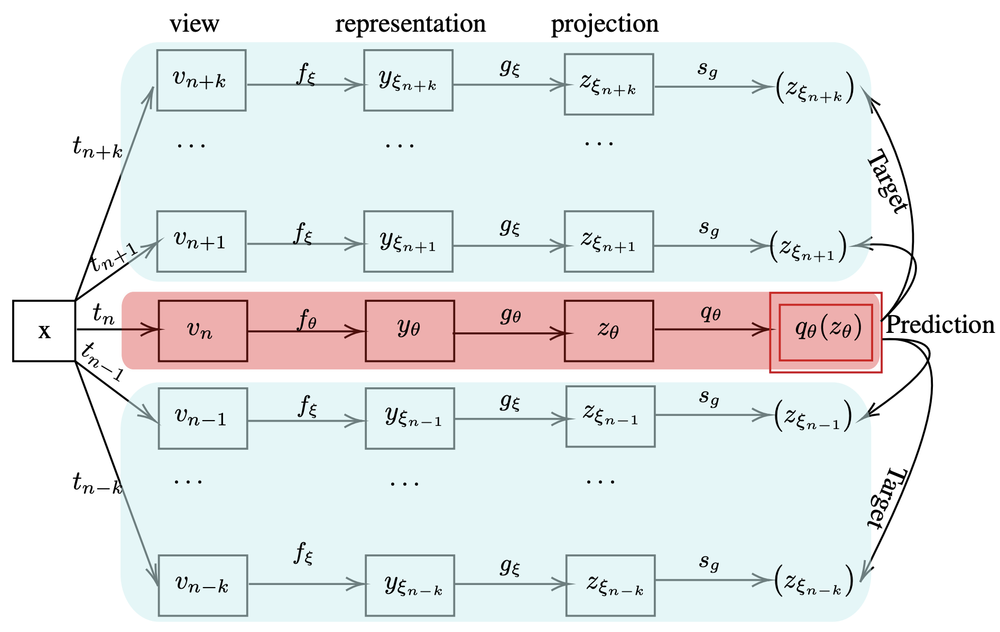
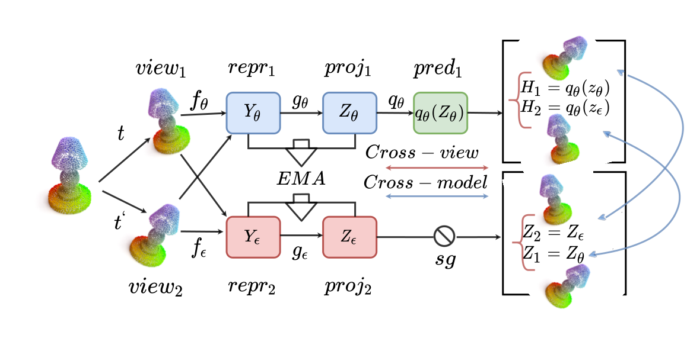
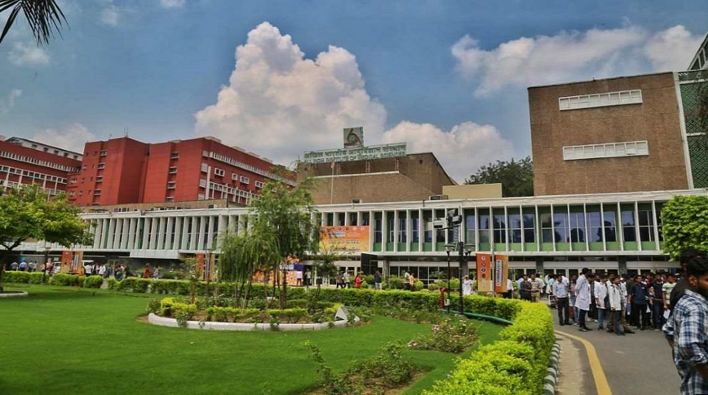

Our Research
Survival Prediction in Lung Cancer through Multi-Modal Representation Learning
WACV, 2025
View Paper

Survival prediction is a crucial task associated with can-
cer diagnosis and treatment planning. This paper presents
a novel approach to survival prediction by harnessing com-
prehensive information from CT and PET scans, along with
associated Genomic data. Current methods rely on either
a single modality or the integration of multiple modalities
for prediction without adequately addressing associations
across patients or modalities. We aim to develop a ro-
bust predictive model for survival outcomes by integrating
multi-modal imaging data with genetic information while
accounting for associations across patients and modali-
ties. We learn representations for each modality via a self-
supervised module and harness the semantic similarities
across the patients to ensure the embeddings are aligned
closely. However, optimizing solely for global relevance
is inadequate, as many pairs sharing similar high-level
semantics, such as tumor type, are inadvertently pushed
apart in the embedding space. To address this issue, we
use a cross-patient module (CPM) designed to harness
inter-subject correspondences. The CPM module aims to
bring together embeddings from patients with similar dis-
ease characteristics. Our experimental evaluation of the
dataset of Non-Small Cell Lung Cancer (NSCLC) patients
demonstrates the effectiveness of our approach in predicting
survival outcomes, outperforming state-of-the-art methods
Read More
MLVICX: Multi-Level Variance-Covariance Exploration for Chest X-ray Self-Supervised Representation Learning
IEEE Journal of Biomedical and Health Informatics, 2024
View Paper

Self-supervised learning (SSL) is potentially useful in reducing the need for manual annotation and making deep learning models accessible for medical image analysis tasks.
By leveraging the representations learned from unlabeled data, self-supervised models perform well on tasks that require little to no fine-tuning. However, for medical images,
like chest X-rays, characterized by complex anatomical structures and diverse clinical conditions, a need arises for representation learning techniques that encode fine-grained
details while preserving the broader contextual information. In this context, we introduce MLVICX (Multi-Level Variance-Covariance Exploration for Chest X-ray Self-Supervised Representation Learning),
an approach to capture rich representations in the form of embeddings from chest X-ray images. Central to our approach is a novel multi-level variance and covariance exploration strategy that effectively
enables the model to detect diagnostically meaningful patterns while reducing redundancy. MLVICX promotes the retention of critical medical insights by adapting global and local contextual details and
enhancing the variance and covariance of the learned embeddings. We demonstrate the performance of MLVICX in advancing self-supervised chest X-ray representation learning through comprehensive experiments.
The performance enhancements we observe across various downstream tasks highlight the significance of the proposed approach in enhancing the utility of chest X-ray embeddings for precision medical diagnosis
and comprehensive image analysis. For pertaining, we used the NIH-Chest X-ray dataset, while for downstream tasks, we utilized NIH-Chest X-ray, Vinbig-CXR, RSNA pneumonia, and SIIM-ACR Pneumothorax datasets.
Overall, we observe up to 3% performance gain over SOTA SSL approaches in various downstream tasks. Additionally, to demonstrate the generalizability of the proposed method, we conducted additional experiments
on fundus images and observed superior performance on multiple datasets.
Read More
CoBooM: Codebook Guided Bootstrapping for Medical Image Representation Learning
MICCAI, 2024
View Paper

Self-supervised learning (SSL) has emerged as a promising paradigm for medical image analysis by harnessing unannotated data. Despite their potential, the existing SSL approaches overlook the high anatomical similarity inherent in medical images. This makes it challenging for SSL
methods to capture diverse semantic content in medical images consistently. This work introduces a novel and generalized solution that implicitly exploits anatomical similarities by integrating codebooks in SSL. The codebook serves as a concise and informative dictionary of visual
patterns, which not only aids in capturing nuanced anatomical details but also facilitates the creation of robust and generalized feature representations. In this context, we propose CoBooM, a novel framework for self-supervised medical image learning by integrating continuous
and discrete representations. The continuous component ensures the preservation of fine-grained details, while the discrete aspect facilitates coarse-grained feature extraction through the structured embedding space. To understand the effectiveness of CoBooM, we conduct a comprehensive
evaluation of various medical datasets encompassing chest X-rays and fundus images. The experimental results reveal a significant performance gain in classification and segmentation tasks.
Read More
IDQCE: Instance Discrimination Learning through Quantized Contextual Embeddings for Medical Images
ICPR, 2024
View Paper

Self-supervised pre-training is effective in learning discrim-
inative features from unlabeled medical images. However, typical self-
supervised models lead to sub-optimal representations due to negligence
of high anatomical similarity present in the medical images. This af-
fects the negative and positive pairs in discriminative self-supervised
models to learn view-invariant representations. Various methods are pro-
posed to address this issue. However, many of them either concentrate
on preserving pixel-level details or offer solutions for specific modali-
ties. In this context, we propose a generalized solution to leverage the
anatomical similarities while relaxing the requirements of complex pixel-
preservation learning. Specifically, we introduce IDQCE: Instance Dis-
crimination Learning through Quantized Contextual Embeddings. The
proposed approach leverages the sparse discrete contextual information
to guide the self-supervised framework to learn more informative repre-
sentations for medical images. We evaluate the representations learned
by IDQCE through comprehensive experiments and observe more than
3% performance gain under linear evaluation protocol over other SOTA
approaches in multiple downstream tasks.
Read More
Translating Imaging to Genomics: Leveraging Transformers for Predictive Modeling
CVPR Workshop : WiCV, 2024
View Paper

In this study, we present a novel approach for predicting genomic information from medical imaging modalities using a transformer-based model.
We aim to bridge the gap between imaging and genomics data by leveraging transformer networks, allowing for accurate genomic profile
predictions from CT/MRI images. Presently most studies rely on the use of whole slide images (WSI) for the association, which are obtained
via invasive methodologies. We propose using only available CT/MRI images to predict genomic sequences.
Our transformer based approach is able to efficiently generate associations between multiple sequences based on CT/MRI images alone.
This work paves the way for the use of non-invasive imaging modalities for precise and personalized healthcare,
allowing for a better understanding of diseases and treatment.
Read More
Large Scale Time-Series Representation Learning via Simultaneous Low- and High-Frequency Feature Bootstrapping
IEEE, Transactions on Neural Networks and Learning Systems 2023
View Paper

Learning representations from unlabeled time series data is a challenging problem. Most existing self-supervised
and unsupervised approaches in the time-series domain fall short in capturing low- and high-frequency features at the same time. As a result, the generalization ability of the learned
representations remains limited. Furthermore, some of these methods employ large-scale models like transformers or rely
on computationally expensive techniques such as contrastive learning. To tackle these problems, we propose a non-contrastive
self-supervised learning approach that efficiently captures low-and high-frequency features in a cost-effective manner. The
proposed framework comprises a siamese configuration of a deep neural network with two weight-sharing branches which are
followed by low- and high-frequency feature extraction modules. The two branches of the proposed network allow bootstrapping of the latent representation by taking two different augmented
views of raw time series data as input. The augmented views are created by applying random transformations sampled from
a single set of augmentations. The low- and high-frequency feature extraction modules of the proposed network contain
a combination of multilayer perceptron (MLP) and temporal convolutional network (TCN) heads respectively, which capture
the temporal dependencies from the raw input data at various scales due to the varying receptive fields. To demonstrate the
robustness of our model, we performed extensive experiments and ablation studies on five real-world time-series datasets. Our
method achieves state-of-art performance on all the considered datasets.
Read More

Federated learning is a distributed machine learning setting in which clients train a global model on their local
data and share their knowledge with the server in form of the trained model while maintaining privacy of the data.
The server aggregates clients' knowledge to create a generalized global model. Two major challenges faced in this
process are data heterogeneity and high communication cost. We target the latter and propose a simple approach,
BAFL (Federated Learning for Base Ablation) for cost effective communication in federated learning. In contrast
to the common practice of employing model compression techniques to reduce the total communication cost, we propose
a fine-tuning approach to leverage the feature extraction ability of layers at different depths of deep neural
networks. We use a model pretrained on general-purpose large scale data as a global model. This helps in better
weight initialization and reduces the total communication cost required for obtaining the generalized model. We
achieve further cost reduction by focusing only on the layers responsible for semantic features (data specific
information). The clients fine tune only top layers on their local data. Base layers are ablated while transferring
the model and clients communicate parameters corresponding to the remaining layers. This results in reduction of
communication cost per round without compromising the accuracy. We evaluate the proposed approach using VGG-16 and
ResNet-50 models on datasets including WBC, FOOD-101, and CIFAR-10 and obtain up to two orders of reduction in
total communication cost as compared to the conventional federated learning. We perform experiments in both IID and
Non-IID settings and observe consistent improvements.
Read More

BYOL leads migration of self-supervised learning techniques from contrastive
to non-constative paradigm. Non-constative techniques do not require negative
pairs to learn meaningful representations from the data. Their success mainly
depends on the stochastic composition of data augmentation techniques and the
siamese configuration of deep neural networks. However, BYOL in its original
form is limited to only two augmented views per training cycle. This motivates us
to extend BYOL from a single target network branch to multiple branches, which
enables simultaneous analysis of multiple augmented views of an input image.
Increasing branches of the target networks marginally increase the computational
cost as each branch is updated only using exponential moving average of online
network’s parameters. We demonstrate superior performance of Multi-Target
BYOL on several vision datasets by evaluating the representations learned by the
online network using linear evaluation protocols.
Read More
MBGRLp: Multiscale Bootstrap Graph Representation Learning on Pointcloud (Student Abstract)
AAAI 2022
View Paper

Point cloud has gained a lot of attention with the availability of a large amount of point cloud data and increasing applications like city planning and self-driving cars. However, current methods, often rely on labeled information and costly processing, such as converting point cloud to voxel. We propose a self-supervised learning approach to tackle these problems, combating labelling and additional memory cost issues. Our proposed method achieves results comparable to supervised and unsupervised baselines on the widely used benchmark datasets for self-supervised point cloud classification like ShapeNet, ModelNet10/40.
Read More
Our collaborations
All India Institute of Medical Sciences, Jodhpur

University of York, London (UK)

Indian Institute of Technology Delhi

All India Institute of Medical Sciences, Delhi